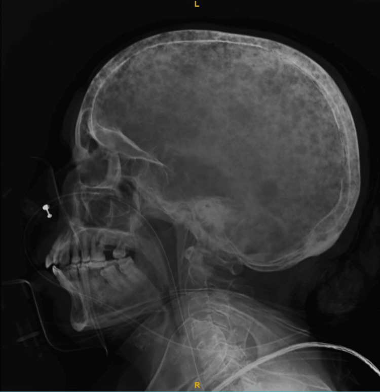

331 — Di căn, myeloma & lymphoma xương người lớn / Adult bone malignancy
Tags: pattern:u-ac-nguoi-lon vung:tuy-xuong
Mức chắc chắn (certainty): tổng hợp y văn (literature synthesis) — nhóm tự biên từ y văn mở, chưa gắn ca nguyên văn đơn lẻ.
1. Tổng quan — > 40 tuổi đa ổ là ác đến khi chứng minh ngược lại + CRAB
- Di căn xương (phổi/vú/tiền liệt tuyến/thận/giáp) + đa u tủy (myeloma) chiếm đa số u ác người lớn — TẠI SAO tủy đỏ trục (cột sống, chậu, sọ, xương dài gần) là đích: tủy tạo máu + mạch xoang chậm, tế bào K dễ bám.
- Myeloma CRAB (tăng canxi, suy thận, thiếu máu, tổn thương xương) + M protein — TẠI SAO sọ giọt mưa (raindrop) không viền đặc: u tương bào ăn xương thuần túy, không kích thích tạo xương.
- Ngưỡng: plasma tủy ≥ 10% + M protein + CRAB = myeloma; PSA + đặc xương = tiền liệt tuyến; hủy cuống (mất mắt cú) + chừa đĩa = di căn (khác Pott phá đĩa).
2. Gamut đa ổ người lớn (Gamut)
- Sọ giọt mưa + CRAB + M protein: myeloma — lenalidomide/bortezomib + ghép tủy.
- Đặc xương + PSA cao: di căn tiền liệt tuyến — nội tiết + xạ.
- Hủy cuống + chừa đĩa + K đã biết: di căn cột sống — xạ/mổ vững.
- Ngà voi (ivory vertebra) đơn đốt: Paget/lymphoma — sinh thiết phân biệt.
3. Bảng so sánh phân biệt (ma trận đối chiếu)
| Thực thể (entity) | Hình ảnh điển hình | Chốt vào (rule-in) | Chốt loại (rule-out) | Gợi ý xác nhận |
|---|---|---|---|---|
| Myeloma | Giọt mưa sọ + đa ổ + không viền + CRAB + M protein | > 40 tuổi + M protein + tủy ≥ 10% | Đặc xương + PSA → tiền liệt tuyến | Điện di + tủy đồ + hóa trị |
| Di căn hủy xương | Hủy cuống + chừa đĩa + khối mềm + K đã biết | Mắt cú + K nguyên phát | Phá đĩa sớm → Pott/vi khuẩn | PET + sinh thiết + xạ |
| Di căn đặc xương | Đặc + PSA + tiền liệt tuyến | Đặc lan tỏa + PSA cao | Giọt mưa + M protein → myeloma | Nội tiết + bisphosphonate |
| Lymphoma xương | Thấm + phù lan + khối mềm lớn + LDH cao | Thấm + mềm lớn + toàn thân | Viền đặc + tự khỏi → NOF | Hóa trị (nhạy xạ-hóa) |

Đa ổ đục lỗ không viền đặc toàn sọ. Nguồn: Karnan et al., Cureus 2024 Fig. 5, CC BY 4.0.4. Protocol
- **X-quang toàn xương + MRI tủy (T1 < cơ) + PET + điện di protein + tủy đồ** khi > 40 tuổi đa ổ; PSA khi nam đặc xương.
flowchart TD
A[>40 tuổi + đa ổ xương] --> B{M protein/PSA?}
B -->|M protein + CRAB| C[Myeloma: hóa trị]
B -->|PSA + đặc| D[Tiền liệt tuyến: nội tiết]
B -->|K đã biết + hủy cuống| E[Di căn: PET + xạ]
5. Cạm bẫy
- Myeloma gọi nhầm di căn xạ vô ích — M protein + tủy đồ trước xạ.
- Tăng canxi + suy thận tưởng tuổi già — CRAB là cấp cứu (truyền + bisphosphonate).
- Lymphoma tưởng viêm kháng sinh kéo dài — thấm + mềm lớn + LDH là sinh thiết.
6. Tự lượng giá — Blind Quiz
Ca 1 — Nữ 60 tuổi khó thở + canxi 14 + tủy tương bào. Đọc sọ.
- Hỏi: tên dấu? Chẩn đoán + 4 chữ CRAB?
Bấm để hiện đáp án
- Dấu hiệu (findings): đa ổ đục lỗ không viền = sọ giọt mưa (raindrop skull).
- Chẩn đoán (diagnosis): đa u tủy xương — CRAB (canxi + thận + máu + xương) + M protein + tủy ≥ 10%.
- Nguồn: Karnan et al., Fig. 5, CC BY 4.0.
Ca 2 — Nam 70 tuổi PSA 200 + đặc xương lan tỏa: myeloma hay tiền liệt tuyến? (Bảng mục 3.)
Bấm để hiện đáp án
- Di căn tiền liệt tuyến: đặc + PSA — nội tiết + bisphosphonate (myeloma là hủy + M protein).
Bài liên quan chéo
- 300 – Tổng quan MSK
- 330 – U xương (Lodwick + don't-touch)
- 222 – Viêm đốt sống (hủy cuống vs phá đĩa)
Không dùng để chẩn đoán độc lập khi chưa có người hướng dẫn.